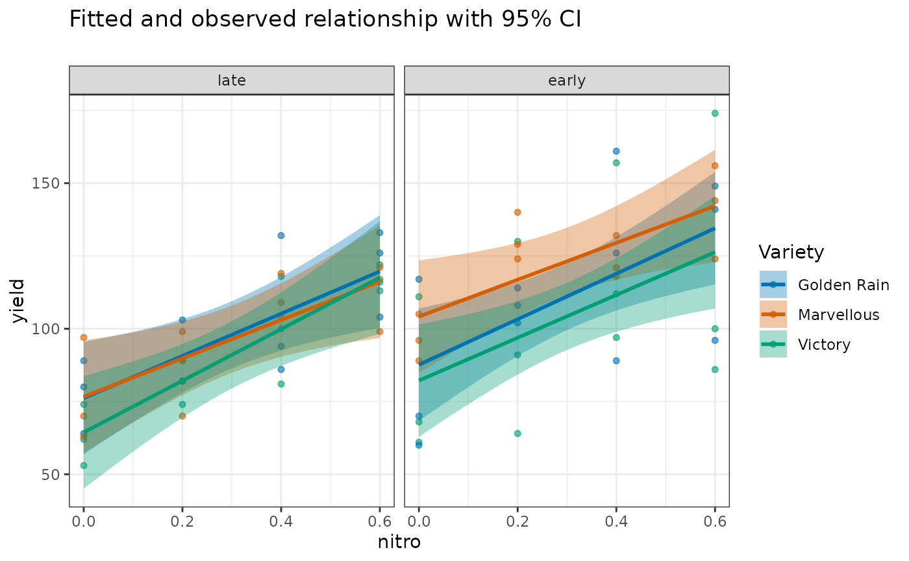
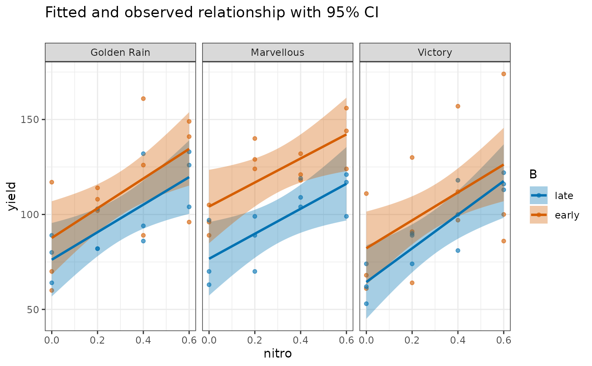
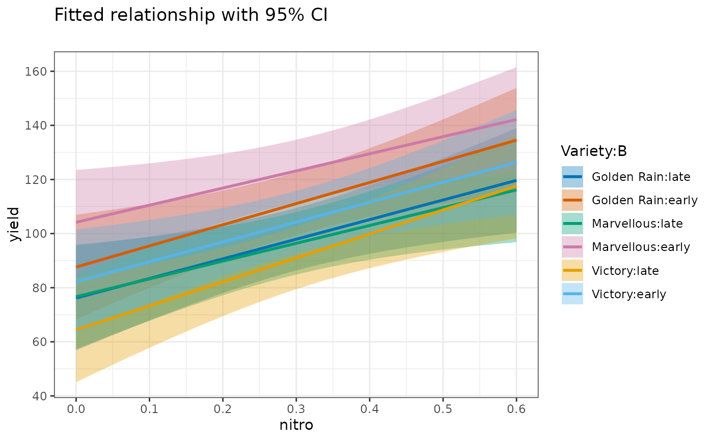

autoplot() draws a result of covariatemeans or semipred as a ggplot2
object (a plotly widget for type = "3d"): the curves with their bands and the data, surfaces as
filled contours, slopes (semipred(deriv = )) with the line at zero, or the difference of two curves
(contr). It reads the tables of the result only, so the layout can be changed without computing again.
plot = TRUE in covariatemeans() and semipred() prints it, and $plt of the result
holds it; their plot_args (superseded) give the same arguments under their 1.x names. Those settings are
kept in the result (attr(x, "plot_args")) and are the defaults of autoplot(x); arguments given to
autoplot() win (autoplot(x, interval = "ci") draws the bands of a result made with ci = FALSE).
The curves and their bands share one legend. When each panel is one group (one factor, the default layout) the
strips name the groups and there is no legend. With more than 8 groups the colours are evenly spaced hues, and
with more than 12 the legend is set in columns with small keys; panel = character(0) puts all curves in
one panel.
Arguments
- object
A result of
covariatemeansorsemipred.- type
"lines"(one covariate: curves or slopes),"surface"(two covariates: filled contours, one panel per level),"3d"(two covariates: a plotly 3-D surface, one widget with a scene per level; needs plotly) or"difference"(a result withcontr). The default is"difference"withcontr, else"lines"or"surface"by the number of covariates.- group, panel
Names of factors of
modelterm:groupcolours the curves,panelmakes the panels (one factor:facet_wrap(); two:facet_grid()rows by columns; more: the first gives the rows, the others together the columns). Factors in neither are joined togroup, so each combination has its own curve. The defaults: with one factor, colour and one panel per level (as 1.x); with more, the first factor colours and the others make the panels.panel = character(0)draws one panel. These replaceplotordandtrellisof 1.x.- scales
The axes of the panels:
"fixed"(default),"free","free_x","free_y".- scale
"model"(the link or the transformed response, columnestimate) or"response"(the back-transformed curves, columnsresponse...). Default:"response"when the curves are back-transformed. Forcontr:"model"shows the difference (as a ratio or odds ratio for a log or logit),"response"the difference of the back-transformed curves; the default iscontr_scaleof the call. Slopes are on the model scale.- data
Draw the data (
TRUE, jittered byjitter): the original response on the response scale, the modelled one on the model scale (none for a link on the model scale). Not drawn for slopes and differences.- jitter
Jitter of the data points, in x and y (units of the axes).
- interval
"ci": the band the result has (simultaneous withband = "simultaneous");"none".- title
The title;
NULLgives the default (covariatemeans(): that of 1.x),FALSEnone.- style
Colours and sizes, any of:
lineandband(one curve),diff_lineanddiff_band(a difference),ref(the reference line and the marks where a band leaves it out),alpha,linewidth,points,point_alpha,point_size,palette(curves by group; ggplot2's own beyond its length),surface_points.- ...
Not used.
Value
A ggplot object, or for type = "3d" a plotly widget. Add to it with ggplot2
(+ labs(y = "Rate")).
Examples
library(predictmeans)
data(Oats, package = "nlme")
Oats$B <- factor(Oats$Block %in% c("I", "II", "III"), labels = c("late", "early"))
fm <- lm(yield ~ nitro * Variety * B, data = Oats)
cm <- covariatemeans(fm, "Variety:B", covariate = "nitro")
ggplot2::autoplot(cm) # colour Variety, panels B

ggplot2::autoplot(cm, group = "B", panel = "Variety")

ggplot2::autoplot(cm, panel = character(0), data = FALSE)
